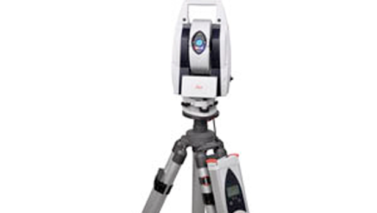
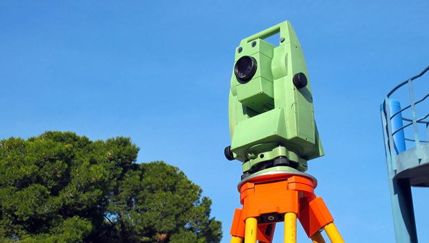

When your high precision project demands the complete picture, demand the best.
Contact Matrix Metrology today to discuss bringing a higher level of clarity to your next project.
Beyond outstanding service, Matrix Metrology has the equipment necessary to get your project
on track.
Mark Andrews, Our Owner
Mark did all the alignment verification with his fine equipment. He went beyond what was expected
of him and has a great work ethic. We all worked well together and he was a tremendous help in
getting the job done right and ahead of schedule, thats always good!
-Larry Robinson
Construction Foreman, Spirit Construction
I would highly recommend Mark Andrews for this work and we would welcome him
as an addition to our team on future projects. Mark also clearly understands the
balance between perfection and making a profit and has demonstrated the business
perspective required for successful projects.
-Howard Irwin
Senior Project Manager, ETMS Georgia-Pacific
Deploying state of the art equipment
Our Laser Scanners can effortlessly deduce exacting detail from an object
of any size as large as buildings or bridges. The laser scanner uses reflective
technology to collect millions of points to produce a 3D model.
Our Laser Trackers deliver accuracy of up to 0.001" for calibration, inspection and
real time assembly and alignment.
Our Total Station EDMs provide accuracy of up to 0.020".


Laser Scanners
Laser Trackers
Total Station EDMs
Effortlessly deduce exacting detail from an object of any size as large as
buildings or bridges. The laser scanner uses reflective technology to collect
millions of points to produce a 3D model.
Delivers accuracy of up to 0.001" for calibration, inspection and
real time assembly and alignment.
Provides accuracy of up to 0.020".